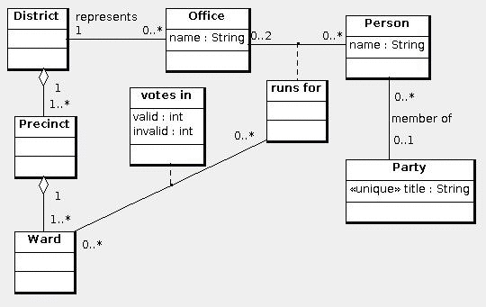

The following is the schema for the election data model:
create table District( id int primary key ); create table Precinct( id int primary key, district int not null, foreign key(district) references District(id) on update cascade on delete cascade ); create table Ward( id int primary key, precinct int not null, foreign key(precinct) references Precinct(id) on update cascade on delete cascade ); create table Office( id int primary key, name varchar(200) not null, represents int not null, foreign key(represents) references District(id) on update cascade on delete no action ); create table Party( id int primary key, title varchar(200) not null unique ); create table Person( id int primary key, name varchar(200) not null, party int null, foreign key(party) references Party(id) on update cascade on delete no action ); create table runsFor( person int, foreign key(person) references Person(id) on update cascade on delete cascade, office int, foreign key(office) references Office(id) on update cascade on delete cascade, primary key(person, office) ); create table votes( ward int, foreign key(ward) references Ward(id) on update cascade on delete cascade, person int, foreign key(person) references Person(id) on update cascade on delete cascade, office int, foreign key(office) references Office(id) on update cascade on delete cascade, valid int not null, invalid int not null, primary key(ward, person, office) );
Express the following queries in SQL:
© 2010 Ken Baclawski. All rights reserved. Redistribution and use in source and binary forms, with or without modification, are permitted provided that redistributions and uses retain this copyright notice.